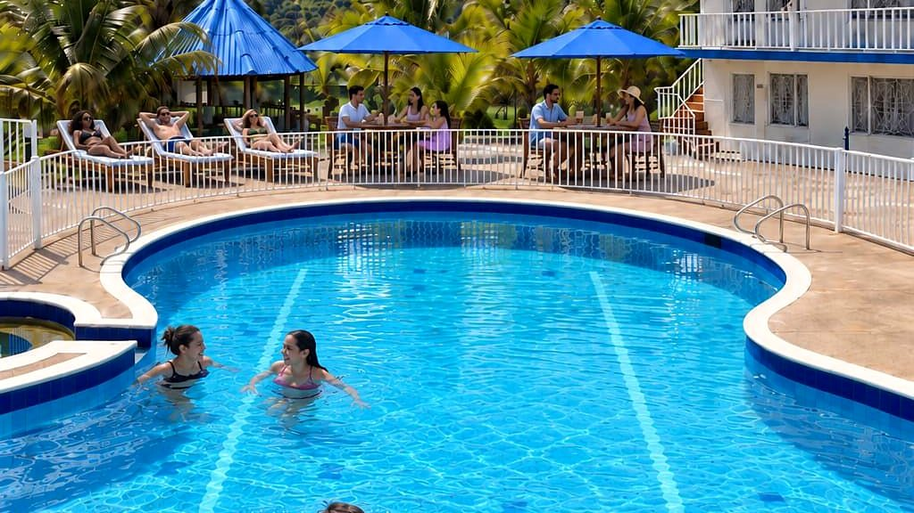

Pasadía cerca de Bogotá con piscina: el Pasadía Premium de Hotel Cabaleón
Un día de clima cálido, piscina y buena mesa sin necesidad de pasar la noche. Te contamos qué incluye el Pasadía Premium, cuánto cuesta y cómo reservarlo.
Lectura de 5 minHotel Cabaleón
¿Quieres cambiar de clima un domingo, pero sin maleta ni noche fuera de casa? Un pasadía cerca de Bogotá es la respuesta. En Hotel Cabaleón, en Tena, pasas el día entre piscinas, jardines y montañas, con almuerzo incluido, y regresas a la ciudad esa misma tarde.
¿Qué es el Pasadía Premium?
El pasadía es un día completo en Cabaleón sin alojamiento: llegas en la mañana, usas las zonas del hotel, almuerzas y vuelves a casa. Es solo con reserva, para garantizar que el día sea tranquilo y con atención personalizada.
Qué incluye
- Almuerzo Sabores Cabaleón en el Restaurante Mangolé.
- Piscina, jacuzzi y sauna.
- Cancha polideportiva, mini tejo, ping pong, billar y gimnasio.
- Terraza mirador con vista a la Cordillera Oriental.
- Parqueadero gratuito.
Los consumos adicionales en el Restaurante Mangolé, en Cabalante Bar o en el Snack-bar Mango Vista se pagan aparte.
Tarifa del pasadía
Durante 2026 el Pasadía Premium tiene una tarifa especial de apertura de $130.000. Puedes verla siempre actualizada en Planes y promociones. Si vienen varios, escríbenos con la fecha y cuántas personas serían para confirmarte el valor total y la disponibilidad.
Cómo reservar tu pasadía
- Elige la fecha en la que quieres venir.
- Escríbenos por WhatsApp con la fecha y el número de personas.
- Te confirmamos disponibilidad, valor total y te enviamos el pin exacto para llegar.
Horarios de las zonas
| Zona | Horario |
|---|---|
| Piscinas | 8:00 a. m. – 5:30 p. m. |
| Sauna | 10:00 – 10:30 a. m. |
| Jacuzzi | 10:30 – 11:00 a. m. y 4:30 – 5:00 p. m. |
| Mini tejo | 9:00 a. m. – 5:30 p. m. |
| Almuerzo en Mangolé | 12:30 – 3:00 p. m. |
| Cabalante Bar | 9:30 a. m. – 5:30 p. m. |
Para aprovecharlo al máximo, te recomendamos llegar temprano: así alcanzas los turnos de sauna y jacuzzi de la mañana antes del almuerzo.
Un pasadía bien aprovechado
Así puedes organizar tu día para disfrutar cada zona en su mejor momento:
| Hora | Plan |
|---|---|
| Mañana | Llegada, parqueadero y primer chapuzón: las piscinas abren a las 8:00 a. m. |
| 10:00 a. m. | Turno de sauna seco (hasta las 10:30 a. m.). |
| 10:30 a. m. | Turno de jacuzzi (hasta las 11:00 a. m.). |
| 12:30 p. m. | Almuerzo Sabores Cabaleón en el Restaurante Mangolé. |
| Tarde | Mini tejo, billar, ping pong, cancha o gimnasio, y fotos en la terraza mirador. |
| 4:30 p. m. | Último turno de jacuzzi, antes del cierre de piscinas a las 5:30 p. m. |
Pasadía en familia
El pasadía es un gran plan con niños: hay piscina infantil de 60 cm, cancha polideportiva y juegos como mini tejo, ping pong y billar. Recuerda que los menores de 12 años deben estar siempre acompañados de un adulto en la piscina.
¿Pasadía o fin de semana?
| Pasadía Premium | Fin de semana | |
|---|---|---|
| Alojamiento | No incluye | Suite, Cabaña o habitación |
| Comidas | Almuerzo Sabores Cabaleón | Desayuno incluido; almuerzo y cena en Mangolé |
| Zonas húmedas | Piscina, jacuzzi y sauna | Piscinas, jacuzzi, sauna y turco en sus turnos |
| Ideal para | Un día de sol sin dormir fuera | Desconectarse de verdad |
Normas para un día tranquilo
- Los menores de 12 años deben estar siempre acompañados de un adulto en la piscina.
- Profundidades: piscina infantil de 60 cm; piscina para adultos de 90 a 170 cm.
- Hotel libre de humo: solo se fuma en las dos zonas exteriores autorizadas.
- Música y conversaciones a volumen moderado.
Consulta el reglamento de la piscina antes de venir.
Qué llevar al pasadía
Vestido de baño, toalla para la piscina, bloqueador, gorra, repelente y ropa ligera para un día de 24 °C a 28 °C. Encuentra la lista completa en qué llevar a clima cálido y la ruta en cómo llegar a Tena desde Bogotá.
Para grupos, celebraciones y empresas
Si buscas un día de integración, un cumpleaños o una reunión familiar, el Gran Salón Mango Vista, el kiosko y los jardines están disponibles para eventos, con el Restaurante Mangolé y Cabalante Bar para atender a tus invitados. Cuéntanos la fecha, el tipo de evento y cuántas personas serían en Eventos y te enviamos la propuesta.
¿Y si quieres quedarte?
Si un día se queda corto, convierte tu pasadía en una escapada: tenemos Suite, Cabaña y habitaciones para familias y amigos, con desayuno e impuestos incluidos. Mira cómo es un fin de semana completo en Cabaleón.
Tu descanso comienza aquí
Elige fechas y habitaciones en nuestra página: ves tu factura al instante, con impuestos y desayuno incluidos, y confirmas con el anticipo del 50 % o el pago total. Directo con el hotel, sin intermediarios.
Preguntas frecuentes
¿Cuánto cuesta el pasadía en Hotel Cabaleón?
El Pasadía Premium tiene una tarifa especial de apertura de $130.000, válida en 2026. Escríbenos con la fecha y el número de personas para confirmarte el valor total.
¿Qué incluye el pasadía?
Almuerzo Sabores Cabaleón y uso de piscina, jacuzzi, sauna, cancha, mini tejo, ping pong, billar, gimnasio, terraza mirador y parqueadero gratuito.
¿Se necesita reserva para el pasadía?
Sí, el pasadía es solo con reserva. Escríbenos por WhatsApp con la fecha y cuántas personas serían.
¿Pueden ir niños al pasadía?
Sí. Hay piscina infantil de 60 cm; los menores de 12 años deben estar siempre acompañados de un adulto en la piscina.
¿A cuánto queda de Bogotá?
A unas 2 horas, en la vereda Escalante de Tena, Cundinamarca, saliendo por la Calle 13 o por la vía Mondoñedo.
¿El pasadía incluye parqueadero?
Sí, el parqueadero es gratuito.
¿Puedo hacer un pasadía para un grupo o una empresa?
Sí. Para grupos, celebraciones e integraciones tenemos el Gran Salón Mango Vista, el kiosko y los jardines. Escríbenos con la fecha, el tipo de evento y el número de personas y te enviamos la propuesta.
Equipo de Hotel CabaleónComplejo turístico campestre en Tena, Cundinamarca. Publicado el .